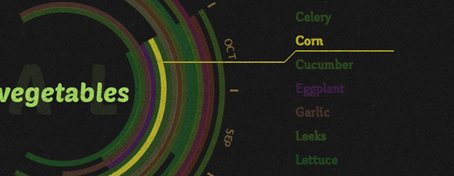
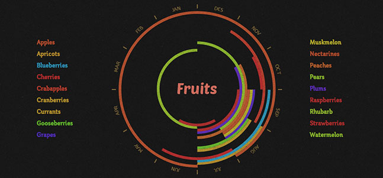
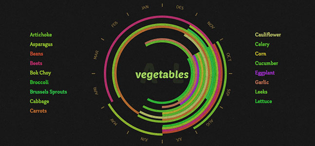
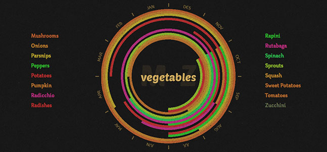

Seconal Food Inforgrafic
Visit page →This is an infographic for the people of Ontario to know when they should buy serter foods because they are in season so they are fresh. The information for this came from the official government site, and was inspired by other seasonal food posters. What I have tried to do in this projects is to have a very vibrant atmosphere, so that when the person would come to this site they could feel positive and happy. I got an interesting effect when I took the the actual food color and made it be its color in the chart. The is also a texture laid over the infographic to create a sense of realism.
